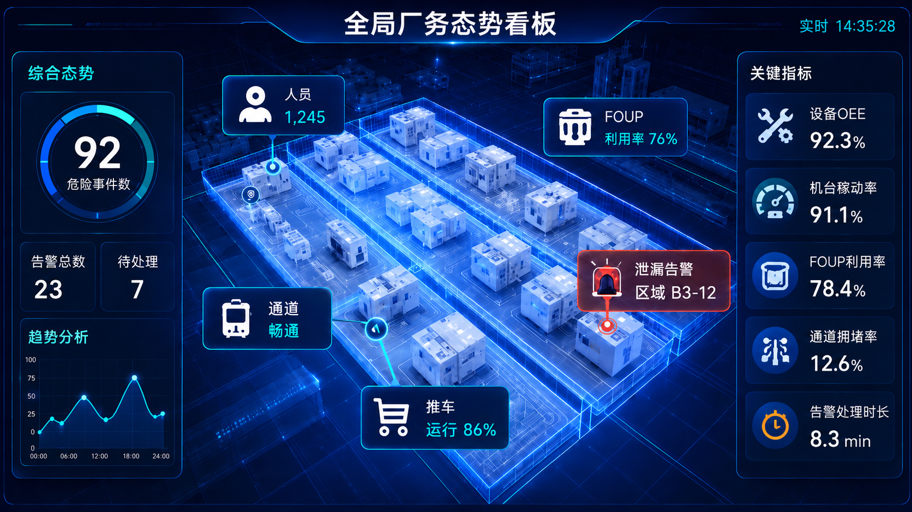
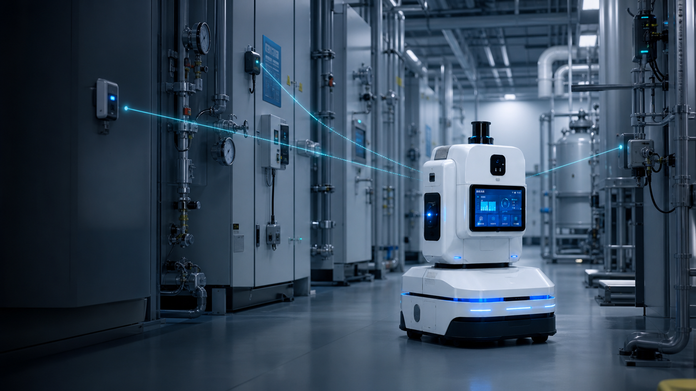

信息孤岛
机器人、机台和系统的数据彼此分离。
F2X / 2026
01 — 核心愿景
F2X 借鉴 V2X 的协同理念，把机器人、传感器、机台、边缘节点与云端能力连接起来。
01 → ∞
智能的尺度
单机智能
AMC 完成自主导航、避障与基础巡检，能力仍被限制在单一设备和单条任务链中。
02 — 为什么是 F2X

机器人、机台和系统的数据彼此分离。
高频现场数据无法全部依赖云端处理。
相同事件在不同系统中有不同表达。
单一设备很难理解全局任务优先级。
03 — 从 V2X 到 F2X
共享位置、意图与任务状态
连接门禁、电梯、固定传感器、机台与厂务设施
获取全局策略与知识能力
理解人员位置和安全边界
04 — 技术架构全景
From V2X to F2X
F2X 不是照搬车联网协议，而是复用它的核心思想： 让移动节点、固定设施、人员与云边平台共享可信上下文， 再由 AI Box 把信息转化为现场可执行的协同决策。
车辆共享运动意图，机器人共享位置、路径、任务与局部风险。
道路基础设施变为门禁、电梯、固定感知节点、机台和厂务设备。
车联网平台变为云端平台与现场 AI Box 组成的云边协同网络。
行人安全协同变为现场人员定位、作业边界和人工确认。
设计边界AI 负责理解、预测与编排；涉及人身、设备和工艺安全的最终控制， 仍由确定性规则、联锁机制和人工授权共同兜底。
05 — 信息模型
位置、电量、任务、健康状态
↗告警、异常、人员靠近、机台异动
↗巡检、复核、搬运、派遣与优先级
↗目标特征、处理策略与协同控制
↗
06 — 场景闭环
机器人与固定节点共同感知人员、障碍、机台和厂务设备状态。
AI Box 将多源数据对齐到统一的时间、空间与事件语义。
AI Box 就近完成风险理解、任务编排和低时延协同。
云端沉淀数字孪生、模型和长期策略，再反馈到现场执行。
07 — 语义通信
VALUE / 价值
CHALLENGE / 挑战
原则安全控制链路优先使用确定性结构化信息。
08 — Ad hoc / Mesh
局部拓扑感知、动态组网、二次确认与断工区域隔离， 让现场在弱网或断网条件下保持必要的安全运行能力。
Safety first安全优先级加权，贯穿多升级别的全局协同。